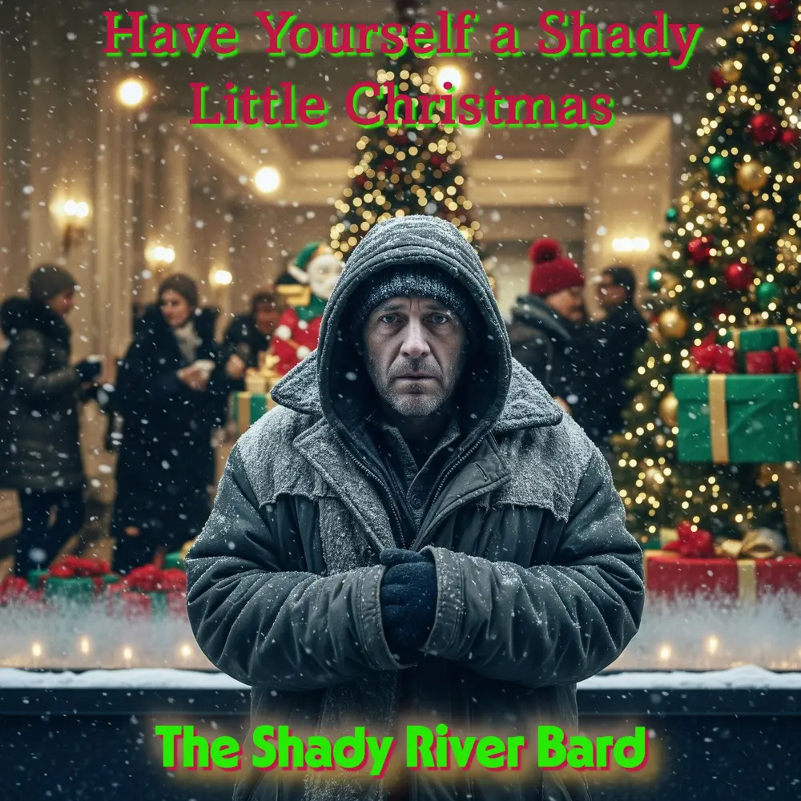

Have Yourself a
Shady Little Christmas
A Social Realist Modern Christmas Carol
“The opposite of addiction is not sobriety. It's connection.”
Welcome to Have Yourself a Shady Little Christmas, an album that is not a celebration of the holiday, but an unflinching look at the “shady” paradox at its heart: the stark, cold reality of those living in the shadows of our festive light. Structured as a modern Christmas carol told through the lens of social realism, the 15 movements trace the journey of William—from social invisibility and the bitter struggle for survival against a lethal winter, through the harrowing roulette of the fentanyl crisis and emergency revival, to an unexpected encounter with Joe the store Santa, and the 76/32 statistical miracle of radical human connection.
Thematic Elements Matrix
The analytical foundation mapping the societal causes, tangible manifestations, and dramatic human outcomes that define William's journey across the four acts.
The Four Acts of Transformation
From the bitter chill of social invisibility to the 76/32 statistical miracle of fellowship and recovery.
The Fifteen Movements
Select any movement below to inspect full stanzas, explore the author's commentary and narrative context, or launch official playback.